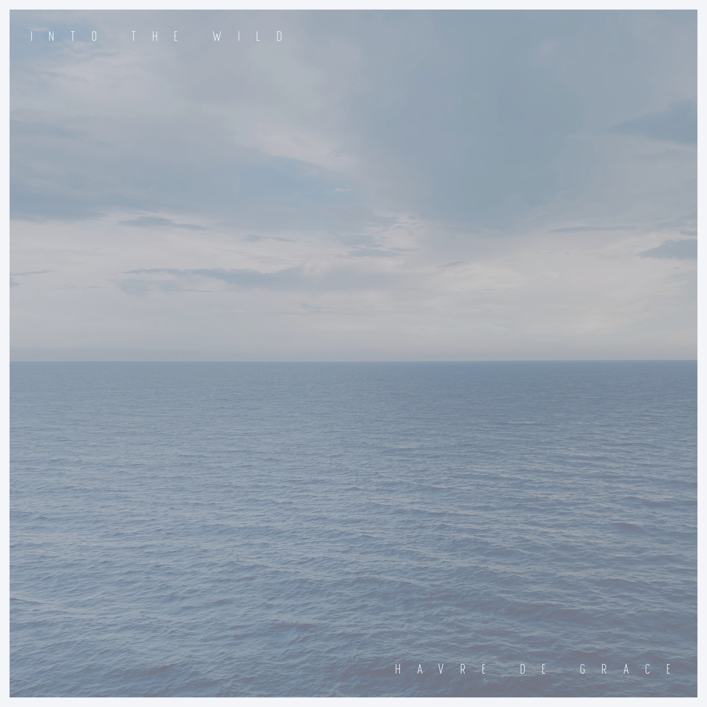
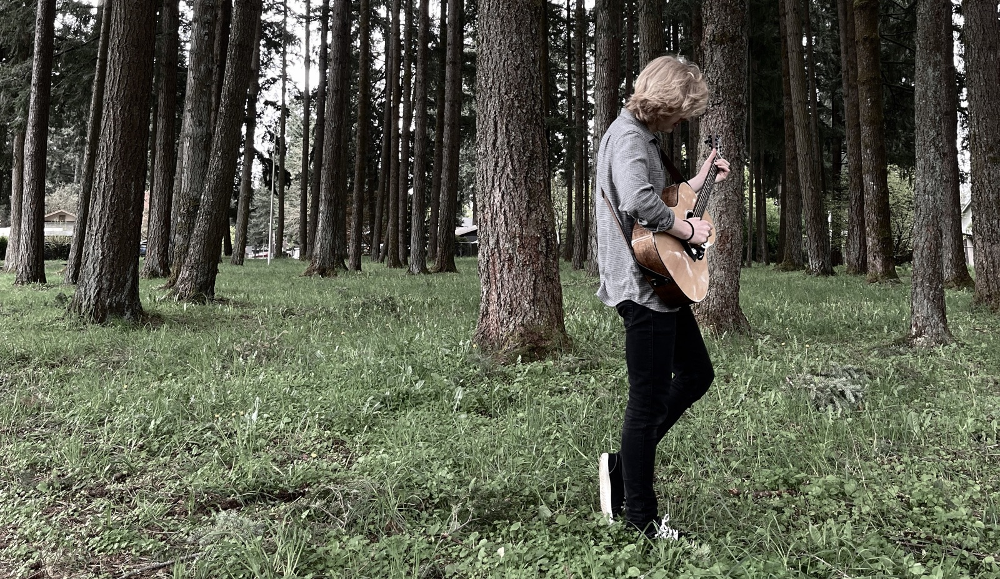

Two options per album, running on Ivory’s real line timings. Each line sizes itself to fit on one row (it only shrinks for the longest lines), writes across the time it’s sung, holds, then fades. Muted, the words follow a stand-in clock; press play and they lock to the audio.

